Chapter II#
The Electrostatic Field of Force#
Conceptions used in the Survey of a Field of Force#
I. The Intensity at a point.#
30. The space in the neighbourhood of charges of electricity, considered with reference to the electric phenomena occurring in this space, is spoken of as the electric field.
A new charge of electricity, placed at any point \(O\) in an electric field, will experience attractions or repulsions from all the charges in the field. The introduction of a new charge will in general disturb the arrangement of the charges on all the conductors in the field by a process of induction. If, however, the new charge is supposed to be infinitesimal, the effects of induction will be negligible, so that the forces acting on the new charge may be supposed to arise from the charges of the original field.
Let us suppose that we introduce an infinitesimal charge \(e\) on an infinitely small conductor. Any charge \(e_1\) in the field at a distance \(r_1\) from the point \(O\) will repel the charge with a force \(e e_1/r_1^2\). The charge \(e\) will experience a similar repulsion from every charge in the field, so that each repulsion will be proportional to \(e\).
The resultant of these forces, obtained by the usual rules for the composition of forces, will be a force proportional to \(e\), say a force \(Re\) in some direction \(OP\). We define the electric intensity at \(O\) to be a force of which the magnitude is \(R\), and the direction is \(OP\). Thus
The electric intensity at any point is given, in magnitude and direction, by the force per unit charge which would act on a charged particle placed at this point, the charge on the particle being supposed so small that the distribution of electricity on the conductors in the field is not affected by its presence.
The electric intensity at \(O\), defined in this way, depends only on the permanent field of force, and has nothing to do with the charge, or the size, or even the existence of the small conductor which has been used to explain the meaning of the electric intensity. There will be a definite intensity at every point of the electric field, quite independently of the presence of small charged bodies.
A small charged body might, however, conveniently be used for exploring the electric field and determining experimentally the direction of the electric intensity at any point in the field. For if we suppose the body carrying a charge \(e\) to be held by an insulating thread, both the body and thread being so light that their weights may be neglected, then clearly all the forces acting on the charged body may be reduced to two:–
A force \(Re\) in the direction of the electric intensity at the point occupied by \(e\),
the tension of the thread acting along the thread.
For equilibrium these two forces must be equal and opposite. Hence the direction of the intensity at the point occupied by the small charged body is obtained at once by producing the direction of the thread through the charged body. And if we tie the other end of the thread to a delicate spring balance, we can measure the tension of the spring, and since this is numerically equal to \(Re\), we should be able to determine \(R\) if \(e\) were known. We might in this way determine the magnitude and direction of the electric intensity at any point in the field.
In a similar way, a float at the end of a fishing-line might be used to determine the strength and direction of the current at any point on a small lake. And, just as with the electric intensity, we should only get the true direction of the current by supposing the float to be of infinitesimal size. We could not imagine the direction of the current obtained by anchoring a battleship in the lake, because the presence of the ship would disturb the whole system of currents.
II. Lines of Force.#
31. Let us start at any point \(O\) in the electric field, and move a short distance \(OP\) in the direction of the electric intensity at \(O\). Starting from \(P\), let us move a short distance \(PQ\) in the direction of the intensity at \(P\), and so on. In this way we obtain a broken path \(OPQR\ldots\), formed of a number of small rectilinear elements. Let us now pass to the limiting case in which each of the elements \(OP\), \(PQ\), \(QR\), … is infinitely small. The broken path becomes a continuous curve, and it has the property that at every point on it the electric intensity is in the direction of the tangent to the curve at that point. Such a curve is called a Line of Force. We may therefore define a line of force as follows:–
A line of force is a curve in the electric field, such that the tangent at every point is in the direction of the electric intensity at that point.
If we suppose the motion of a charged particle to be so much retarded by frictional resistance that it cannot acquire any appreciable momentum, then a charged particle set free in the electric field would trace out a line of force. In the same way, we should have lines of current on the surface of a lake, such that the tangent to a line of current at any point coincided with the direction of the current, and a small float set free on the lake would describe a current-line.
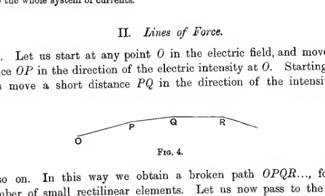
A broken path begins at a point labeled \(O\) and proceeds through short straight segments toward points \(P\), \(Q\), and \(R\). The successive segments bend gently, illustrating how a polygonal path approaches a smooth line of force when the step lengths become very small.
32. The resultant of a number of known forces has a definite direction, so that there is a single direction for the electric intensity at every point of the field. It follows that two lines of force can never intersect; for if they did there would be two directions for the electric intensity at the point of intersection (namely, the two tangents to the lines of force at this point) so that the resultant of a number of known forces would be acting in two directions at once. An exception occurs, as we shall see, when the resultant intensity vanishes at any point.
The intensity \(R\) may be regarded as compounded of three components \(X\), \(Y\), \(Z\), parallel to three rectangular axes \(Ox\), \(Oy\), \(Oz\).
The magnitude of the electric intensity is then given by
and the direction cosines of its direction are
These, therefore, are also the direction cosines of the tangent at \(x, y, z\) to the line of force through the point. The differential equation of the system of lines of force is accordingly
III. The Potential.#
33. In moving the small test-charge \(e\) about in the field, we may either have to do work against electric forces, or we may find that these forces will do work for us. A small charged particle which has been placed at a point \(O\) in the electric field may be regarded as a store of energy, this energy being equal to the work (positive or negative) which has been done in taking the charge to \(O\) in opposition to the repulsions and attractions of the field. The energy can be reclaimed by allowing the particle to retrace its path. Assume the charge on the moving particle to be so small that the distribution of electricity on the conductors in the field is not affected by it. Then the work done in bringing the charge \(e\) to a point \(O\) is proportional to \(e\), and may be taken to be \(Ve\). The amount of work done will of course depend on the position from which the charged particle started. It is convenient, in measuring \(Ve\), to suppose that the particle started at a point outside the field altogether, i.e. from a point so far removed from all the charges of the field that their effect at this point is inappreciable-for brevity, we may say the point at infinity. We now define \(V\) to be the potential at the point \(O\). Thus
The potential at any point in the field is the work per unit charge which has to be done on a charged particle to bring it to that point, the charge on the particle being supposed so small that the distribution of electricity on the conductors in the field is not affected by its presence.
In moving the small charge \(e\) from \(x, y, z\) to \(x + d x, y + d y, z + d z\), we shall have to perform an amount of work
so that in bringing the charge \(e\) into position at \(x, y, z\) from outside the field altogether, we do an amount of work
where the integral is taken along the path followed by \(e\).
Denoting the work done on the charge \(e\) in bringing it to any point \(x, y, z\) in the electric field by \(Ve\), we clearly have
giving a mathematical expression for the potential at the point \(x, y, z\).
The same result can be put in a different form. If \(d s\) is any element of the path, and if the intensity \(R\) at the extremity of this element makes an angle \(\theta\) with \(d s\), then the component of the force acting on \(e\) when moving along \(d s\), resolved in the direction of motion of \(e\), is \(Re \cos \theta\). The work done in moving \(e\) along the element \(d s\) is accordingly
so that the whole work in bringing \(e\) from infinity to \(x, y, z\) is
and since this is equal, by definition, to \(Ve\), we must have
We see at once that the two expressions (6) and (7) just obtained for \(V\) are identical, on noticing that \(\theta\) is the angle between two lines of which the direction cosines are respectively
and
We therefore have
so that
and the identity of the two expressions becomes obvious.
If the Theorem of the Conservation of Energy is true in the Electrostatic Field, the work done in bringing a small charge \(e\) from infinity to any point \(P\) must be the same whatever path to \(P\) we choose. For if the amounts of work were different on two different paths, let these amounts be \(V_P e\) and \(V'_P e\), and let the former be the greater. Then by taking the charge from \(P\) to infinity by the former path and bringing it back by the latter, we should gain an amount of work \((V_P - V'_P)e\), which would be contrary to the Conservation of Energy. Thus \(V_P\) and \(V'_P\) must be equal, and the potential at \(P\) is the same, no matter by what path we reach \(P\). The potential at \(P\) will accordingly depend only on the coordinates \(x, y, z\) of \(P\).
As soon as we introduce the special law of the inverse square, we shall find that the potential must be a single-valued function of \(x, y, z\), as a consequence of this law (\(\S 39\)), and hence shall be able to prove that the Theorem of Conservation of Energy is true in an Electrostatic field. For the moment, however, we assume this.
34. Let us denote by \(W\) the work done in moving a charge \(e\) from \(P\) to \(Q\). In bringing the charge from infinity to \(P\), we do an amount of work which by definition is equal to \(V_P e\) where \(V_P\) denotes the value of \(V\) at the point \(P\). Hence in taking it from infinity to \(Q\), we do a total amount of work \(V_P e + W\). This, however, is also equal by definition to \(V_Q e\). Hence we have
or
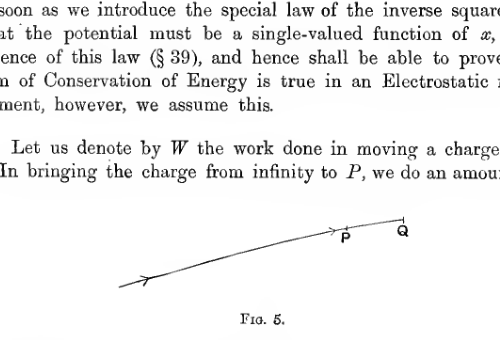
A single slanting directed line runs from lower left toward upper right, ending near a point labeled \(Q\) and passing by a point labeled \(P\). Arrowheads indicate the direction of motion of the test charge from \(P\) toward \(Q\) along the path segment.
35. Definition. A surface in the electric field such that at every point on it the potential has the same value, is called an Equipotential Surface.
In discussing the phenomena of the electrostatic field, it is convenient to think of the whole field as mapped out by systems of equipotential surfaces and lines of force, just as in geography we think of the earth’s surface as divided up by parallels of latitude and longitude. A more exact parallel is obtained if we think of the earth’s surface as mapped out by “contour-lines” of equal height above sea-level, and by lines of greatest slope. These reproduce all the properties of equipotentials and lines of force, for in point of fact they are actual equipotentials and lines of force for the gravitational field of force.
Theorem. Equipotential surfaces cut lines of force at right angles.
Let \(P\) be any point in the electric field, and let \(Q\) be an adjacent point on the same equipotential as \(P\). Then, by definition, \(V_P = V_Q\), so that by equation (8) \(W = 0\), \(W\) being the amount of work done in moving a charge \(e\) from \(P\) to \(Q\). If \(R\) is the intensity at \(Q\), and \(\theta\) the angle which its direction makes with \(QP\), the amount of this work must be \(- Re \cos \theta \times PQ\), so that
Hence \(\cos \theta = 0\), so that the line of force cuts the equipotential at right angles. As in a former theorem, an exception has to be made in favour of the case in which \(R = 0\).
36. Instead of \(P, Q\) being on the same equipotential, let them now be on a line parallel to the axis of \(x\), their coordinates being \(x, y, z\) and \(x + d x, y, z\) respectively. In moving the charge \(e\) from \(P\) to \(Q\) the work done is \(- X e d x\), and by equation (8) it is also \((V_Q - V_P)e\). Hence
Since \(Q\) and \(P\) are adjacent, we have, from the definition of a differential coefficient,
hence we have the relations
results which are of course obvious on differentiating equation (6) with respect to \(x, y\) and \(z\) respectively.
Similarly, if we imagine \(P, Q\) to be two points on the same line of force we obtain
where \(\frac{\partial}{\partial s}\) denotes differentiation along a line of force. Since \(R\) is necessarily positive, it follows that \(\frac{\partial V}{\partial s}\) is negative, i.e. \(V\) decreases as \(s\) increases, or the intensity is in the direction of \(V\) decreasing. Thus the lines of force run from higher to lower values of \(V\), and, as we have already seen, cut all equipotentials at right angles.
37. At a point which is occupied by conducting material, the electric charges, as has already been said, must be in equilibrium under the action of the forces from all the other charges in the field. The resultant force from all these charges on any element of charge is however \(Re\), so that we must have \(R = 0\). Hence \(X = Y = Z = 0\), so that
In other words, \(V\) must be constant throughout a conductor for electrostatic equilibrium to be possible. And in particular the surface of a conductor must be an equipotential surface, or part of one. The equipotential of which the surface of a conductor is part has the peculiarity of being three-dimensional instead of two-dimensional, for it occupies the whole interior as well as the surface of the conductor.
In the same way, in considering the analogous arrangement of contour-lines and lines of greatest slope on a map of the earth’s surface, we find that the edge of a lake or sea must be a contour-line, but that in strictness this particular contour must be regarded as two-dimensional rather than one-dimensional, since it coincides with the whole surface of the lake or sea.
If \(V\) is not constant in any conductor, the intensity is in the direction of \(V\) decreasing. Hence positive electricity tends to flow in the direction of \(V\) decreasing, and negative electricity in the direction of \(V\) increasing. If two conductors in which the potential has different values are joined by a third conductor, the intensity in the third conductor will be in direction from the conductor at higher potential to that at lower potential. Electricity will flow through this conductor, and will continue to flow until the redistribution of potential caused by the transfer of this electricity is such that the potential is the same at all points of the conductors, which may now be regarded as forming one single conductor.
Thus although the potential has been defined only with reference to single points, it is possible to speak of the potential of a whole conductor. In fact, the mathematical expression of the condition that equilibrium shall be possible for a given system of charges is simply that the potential shall be constant throughout each conductor. And when electric contact is established between two conductors, either by joining them by a wire or by other means, the new condition for equilibrium which is made necessary by the new physical condition introduced, is simply that the potentials of the two conductors shall be equal.
The earth is a conductor, and is therefore at the same potential throughout. In all practical applications of electrostatics, it will be legitimate to regard the potential of the earth as zero, a distant point on the earth’s surface replacing the imaginary point at infinity, with reference to which potentials have so far been measured. Thus any conductor can be reduced to potential zero by joining it by a metallic wire to the earth.
Mathematical Expressions of the Law of the Inverse Square#
I. Values of Potential and Intensity.#
38. We now discuss the values of the potential and components of electric intensity when the space between the conductors is air, so that the electric forces are determined by Coulomb’s Law.
If we have a single point charge \(e_1\) at a point \(P\), the value of \(R\), the resultant intensity at any point \(O\), is
and its direction is that of \(P O\). Hence if \(\theta\) is the angle between \(O P\) and \(O O'\), the line joining \(O\) to an adjacent point \(O'\), the work done in moving a charge \(e\) from \(O\) to \(O'\)
where \(O P = r\), \(O' P = r + d r\). Hence the work done against the repulsion of the charge \(e_1\) in bringing \(e\) from infinity to \(O'\) by any path is
where \(r_1 = O' P\).
If there are other charges \(e_2, e_3, \ldots\) the work done against all the repulsions in bringing a charge \(e\) to \(O'\) will be the sum of terms such as the above, say
where \(r_2, r_3, \ldots\) are the distances from \(O'\) to \(e_2, e_3, \ldots\), so that by definition
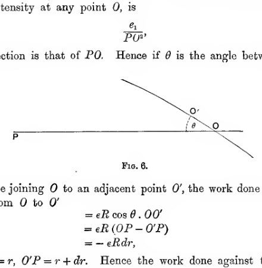
A point charge at \(P\) lies on a horizontal line passing through \(O\). An adjacent point \(O'\) is reached by a short oblique segment making an angle \(\theta\) with the horizontal, illustrating the relation between displacement, radial distance, and the component of intensity used in deriving the potential of a point charge.
39. It is now clear that the potential at any point depends only on the coordinates of the point, so that the work done in bringing a small charge from infinity to a point \(P\) is always the same, no matter what path we choose, the result assumed in \(\S 33\).
It follows that we cannot alter the amount of energy in the field by moving charges about in such a way that the final state of the field is the same as the original state. In other words, the Conservation of Energy is true of the Electrostatic Field.
40. Analytically, let us suppose that the charge \(e_1\) is at \(x_1, y_1, z_1\); \(e_2\) at \(x_2, y_2, z_2\); and so on. The repulsion on a small charge \(e\) at \(x, y, z\) resulting from the presence of \(e_1\) at \(x_1, y_1, z_1\) is
and the direction-cosines of the direction in which this force acts on the charge \(e\), are
etc. Hence the component parallel to the axis of \(x\) is
By adding all such components, we obtain as the component of the electric intensity at \(x, y, z\),
and there are similar equations for \(Y\) and \(Z\).
We have as the value of \(V\) at \(x, y, z\), by equation (6),
giving the same result as equation (10).
41. If the electric distribution is not confined to points, we can imagine it divided into small elements which may be treated as point charges. For instance if the electricity is spread throughout a volume, let the charge on any element of volume \(d x' d y' d z'\) be \(\rho d x' d y' d z'\) so that \(\rho\) may be spoken of as the “density” of electricity at \(x', y', z'\). Then in formula (11) we can replace \(e_1\) by \(\rho d x' d y' d z'\), and \(x_1, y_1, z_1\), by \(x', y', z'\). Instead of summing the charges \(e_1, \ldots\) we of course integrate \(\rho d x' d y' d z'\) through all those parts of the space which contain electrical charges. In this way we obtain
etc., and
These equations are one form of mathematical expression of the law of the inverse square of the distance. An attempt to perform the integration, in even a few simple cases, will speedily convince the student that the form is not one which lends itself to rapid progress. A second form of mathematical expression of the law of the inverse square is supplied by a Theorem of Gauss which we shall now prove, and it is this expression of the law which will form the basis of our development of electrostatical theory.
II. Gauss’ Theorem.#
42. Theorem. If any closed surface is taken in the electric field, and if \(N\) denotes the component of the electric intensity at any point of this surface in the direction of the outward normal, then
where the integration extends over the whole of the surface, and \(E\) is the total charge enclosed by the surface.
Let us suppose the charges in the field, both inside and outside the closed surface, to be \(e_1\) at \(P_1\), \(e_2\) at \(P_2\), and so on. The intensity at any point is the resultant of the intensities due to the charges separately, so that at any point of the surface, we may write
where \(N_1, N_2, \ldots\) are the normal components of intensity due to \(e_1, e_2, \ldots\) separately.
Instead of attempting to calculate \(\iint N d S\) directly, we shall calculate separately the values of \(\iint N_1 d S\), \(\iint N_2 d S\), …. The value of \(\iint N d S\) will, by equation (12), be the sum of these integrals.
Let us take any small element \(d S\) of the closed surface in the neighbourhood of a point \(Q\) on the surface and join each point of its boundary to the point \(P_1\). Let the small cone so formed cut off an element of area \(d \omega\) from a sphere drawn through \(Q\) with \(P_1\) as centre, and an element of area \(d \omega\) from a sphere of unit radius drawn about \(P_1\) as centre. Let the normal to the closed surface at \(Q\) in the direction away from \(P_1\) make an angle \(\theta\) with \(P_1 Q\).
The intensity at \(Q\) due to the charge \(e_1\) at \(P_1\) is \(e_1/P_1 Q^2\) in the direction \(P_1 Q\), so that the component of the intensity along the normal to the surface in the direction away from \(P_1\) is
The contribution to \(\iint N_1 d S\) from the element of surface is accordingly
the \(+\) or \(-\) sign being taken according as the normal at \(Q\) in the direction away from \(P_1\) is the outward or inward normal to the surface.
Now \(\cos \theta \, d S\) is equal to \(d \sigma\), the projection of \(d S\) on the sphere through \(Q\) having \(P_1\) as centre, for the two normals to \(d S\) and \(d \sigma\) are inclined at an angle \(\theta\). Also \(d \sigma = P_1 Q^2 d \omega\). For \(d \sigma, d \omega\) are the areas cut off by the same cone on spheres of radii \(P_1 Q\) and unity respectively. Hence
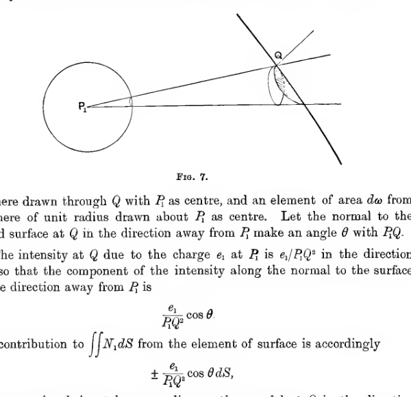
A point charge at \(P_1\) lies to the left of a closed surface. A narrow cone from \(P_1\) cuts the surface at a small tilted patch around \(Q\), with the outward normal at \(Q\) making an angle \(\theta\) to the line \(P_1Q\). The construction also indicates the projected area element used in Gauss’s theorem.
If \(P_1\) is inside the closed surface, a line from \(P_1\) to any point on the unit sphere surrounding \(P_1\) may either cut the closed surface only once as at \(Q\) (fig. 8), or it may cut the surface three times, as at \(Q, Q', Q''\),-in which case two of the normals away from \(P_1\) (those at \(Q, Q''\) in fig. 8) are outward normals to the surface, while the third normal away from \(P_1\) (that at \(Q'\) in the figure) is an inward normal-or it may cut five, seven, or any odd number of times. Thus a cone through a small element of area \(d \omega\) on a unit sphere about \(P_1\) may cut the closed surface any odd number of times. However many times it cuts, the first small area cut off will contribute \(e_1 d \omega\) to \(\iint N_1 d S\), the second and third small areas if they occur will contribute \(- e_1 d \omega\) and \(+ e_1 d \omega\) respectively, the fourth and fifth if they occur will contribute \(- e_1 d \omega\) and \(+ e_1 d \omega\) respectively, and so on. The total contribution from the cone surrounding \(d \omega\) is, in every case, \(+ e_1 d \omega\).
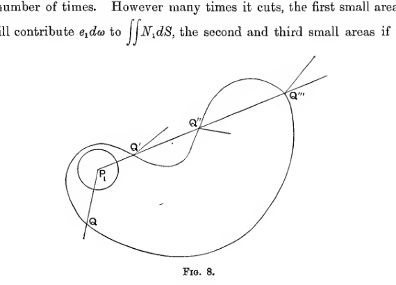
A winding closed curve is intersected by a cone from the interior point \(P_1\). The same ray cuts the surface an odd number of times at points labeled \(Q\), \(Q'\), \(Q''\), and \(Q'''\), illustrating how alternating outward and inward crossings still give a net positive contribution when the charge lies inside the surface.
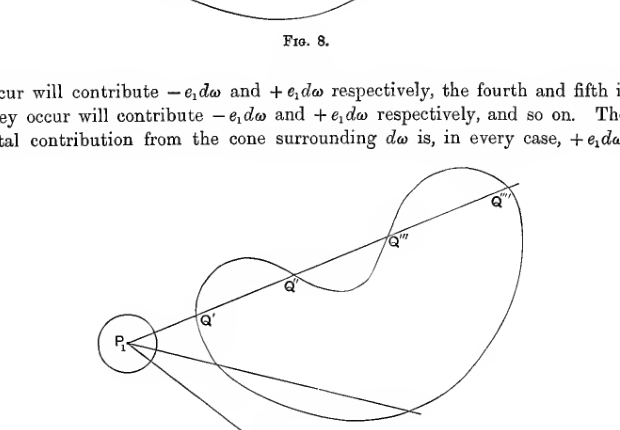
A similar cone is drawn from the external point \(P_1\) to a distorted closed curve. The ray intersects the surface an even number of times at points labeled \(Q'\), \(Q''\), \(Q'''\), and \(Q''''\), showing how the positive and negative contributions cancel when the charge lies outside the closed surface.
Summing over all cones which can be drawn in this way through \(P_1\) we obtain the whole value of \(\iint N_1 d S\), which is thus seen to be simply \(e_1\) multiplied by the total surface area of the unit sphere round \(P_1\), and therefore \(4 \pi e_1\).
On the other hand if \(P_1\) is outside the closed surface, as in fig. 9, the cone through any element of area \(d \omega\) on the unit sphere may either not cut the closed surface at all, or may cut it twice, or four, six or any even number of times. If the cone through \(d \omega\) intersects the surface at all, the first pair of elements of surface which are cut off by the cone contribute \(- e_1 d \omega\) and \(+ e_1 d \omega\) respectively to \(\iint N_1 d S\). The second pair, if they occur, make a similar contribution and so on. In every case the total contribution from any small cone through \(P_1\) is nil. By summing over all such cones we shall include the contributions from all parts of the closed surface, so that if \(P_1\) is outside the surface \(\iint N_1 d S\) is equal to zero.
We have now seen that \(\iint N_1 d S\) is equal to \(4 \pi e_1\) when the charge \(e_1\) is inside the closed surface, and is equal to zero when the charge \(e_1\) is outside the closed surface. Hence
which proves the theorem.
Obviously the theorem is true also when there is a continuous distribution of electricity in addition to a number of point charges. For clearly we can divide up the continuous distribution into a number of small elements and treat each as a point charge.
Since \(N\), the normal component of intensity, is equal by \(\S 36\) to \(- \frac{\partial V}{\partial n}\), where \(\frac{\partial}{\partial n}\) denotes differentiation along the outward normal, it appears that we can also express Gauss’ Theorem in the form
Gauss’ theorem forms the most convenient method at our disposal, of expressing the law of the inverse square.
We can obtain a preliminary conception of the physical meaning underlying the theorem by noticing that if the surface contains no charge at all, the theorem expresses that the average normal intensity is nil. If there is a negative charge inside the surface, the theorem shews that the average normal intensity is negative, so that a positively charged particle placed at a point on the imaginary surface will be likely to experience an attraction to the interior of the surface rather than a repulsion away from it, and vice versa if the surface contains a positive charge.
43. Theorem. If a closed surface be drawn, such that every point on it is occupied by conducting material, the total charge inside it is nil.
We have seen that at any point occupied by conducting material, the electric intensity must vanish. Hence at every point of the closed surface, \(N = 0\), so that \(\iint N d S = 0\), and therefore, by Gauss’ Theorem, the total charge inside the closed surface must vanish.
The two following special cases of this theorem are of the greatest importance.
44. Theorem. There is no charge at any point which is occupied by conducting material, unless this point is on the surface of a conductor.
For if the point is not on the surface, it will be possible to surround the point by a small sphere, such that every point of this sphere is inside the conductor. By the preceding theorem the charge inside this sphere is nil, hence there is no charge at the point in question.
This theorem is often stated by saying:–
The charge of a conductor resides on its surface.
45. Theorem. If we have a hollow closed conductor, and place any number of charged bodies inside it, the charge on its inner surface will be equal in magnitude but opposite in sign, to the total charge on the bodies inside.
For we can draw a closed surface entirely inside the material of the conductor, and by the theorem of \(\S 43\), the whole charge inside this surface must be nil. This whole charge is, however, the sum of (i) the charge on the inner surface of the conductor, and (ii) the charges on the bodies inside the conductor. Hence these two must be equal and opposite.
This result explains the property of the electroscope which led us to the conception of a definite quantity of electricity. The vessel placed on the plate of the electroscope formed a hollow closed conductor. The charge on the inner surface of this conductor, we now see, must be equal and opposite to the total charge inside, and, since the total charge on this conductor is nil, the charge on its outer surface must be equal and opposite to that on the inner surface, and therefore exactly equal to the sum of the charges placed inside, independently of the position of these charges.
The Cavendish Proof of the Law of the Inverse Square.#
46. We have deduced from the law of the inverse square, that the charge inside a closed conductor is zero. We shall now show that the converse theorem is also true. Hence, in the known fact, revealed by the observations of Cavendish and Maxwell, that the charge inside a closed conductor is zero, we have experimental proof of the law of the inverse square which admits of much greater accuracy than the experimental proof of Coulomb.
The theorem that if there is no charge inside a spherical conductor the law of force must be that of the inverse square is due to Laplace. We need consider this converse theorem only in its application to a spherical conductor, this being the actual form of conductor used by Cavendish. The apparatus illustrated in fig. 10 is not that used by Cavendish, but is an improved form designed by Maxwell, who repeated Cavendish’s experiment in a more delicate form.
Two spherical shells are fixed by a ring of ebonite so as to be concentric with one another, and insulated from one another. Electrical contact can be established between the two by letting down the small trap-door \(B\) through which a wire passes, the wire being of such a length as just to establish contact when the trap-door is closed. The experiment is conducted by electrifying the outer shell, opening the trap-door by an insulating thread without discharging the conductor, afterwards discharging the outer conductor and testing whether any charge is to be found on the inner shell by placing it in electrical contact with a delicate electroscope by means of a conducting wire inserted through the trap-door. It is found that there are no traces of a charge on the inner sphere.
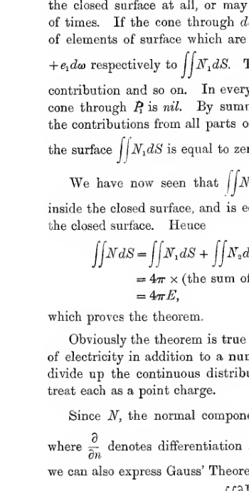
Two concentric spherical shells are shown in section on a vertical insulating support. A small hinged trap-door labeled \(B\) sits at the top of the outer shell, and the outer shell itself is labeled \(A\). The figure depicts Maxwell’s improved apparatus for the Cavendish test of the inverse-square law.
47. Suppose we start to find the law of electric force such that there shall be no charge on the inner sphere. Let us assume a law of force such that the repulsion between two charges \(e, e'\) at distance \(r\) apart is \(e e' \phi(r)\). The potential, calculated as explained in \(\S 33\), is
where the summation extends over all the charges in the field.
Let us calculate the potential at a point inside the sphere due to a charge \(E\) spread entirely over the surface of the sphere. If the sphere is of radius \(a\), the area of its surface is \(4 \pi a^2\), so that the amount of charge per unit area is \(E/4 \pi a^2\), and the expression for the potential becomes
the summation of expression (13) being now replaced by an integration which extends over the whole sphere. In this expression \(r\) is the distance from the point at which the potential is evaluated, to the element \(a^2 \sin \theta \, d \theta \, d \phi\) of spherical surface.
If we agree to evaluate the potential at a point situated on the axis \(\theta = 0\) at a distance \(c\) from the centre, we may write
Since \(c\) is a constant, we obtain as the relation between \(d r\) and \(d \theta\), by differentiation of this last equation,
If we integrate expression (14) with respect to \(\phi\), the limits being of course \(\phi = 0\) and \(\phi = 2 \pi\), we obtain
or, on changing the variable from \(\theta\) to \(r\), by the help of relation (15)
If we introduce a new function \(f(r)\), defined by
we obtain as the value of \(V\),
If the inner and outer spheres are in electrical contact, their potentials are the same; and if, as experiment shows to be the case, there is no charge on the inner sphere, then the whole potential must be that just found. This expression must, accordingly, have the same value whether \(c\) represents the radius of the outer sphere or that of the inner. Since this is true whatever the radius of the inner sphere may be, the expression must be the same for all values of \(c\). We must accordingly have
where \(V\) is the same for all values of \(c\). Differentiating this equation twice with respect to \(c\), we obtain
Since by definition, \(f(r)\) depends only on the law of force, and not on \(a\) or \(c\), it follows from the relation
that \(f''(r)\) must be a constant, say \(C\).
Hence
and by definition
so that on equating the two values of \(f'(r)\),
Therefore
or
so that the law of force is that of the inverse square.
48. Maxwell has examined what charge would be produced on the inner sphere if, instead of the law of force being accurately \(B/r^2\), it were of the form \(B/r^{2+q}\), where \(q\) is some small quantity. In this way he found that if \(q\) were even so great as \(1/21600\), the charge on the inner sphere would have been too great to escape observation. As we have seen, the limit which Cavendish was able to assign to \(q\) was \(1/50\).
It may be urged that the form \(B/r^{2+q}\) is not a sufficiently general law of force to assume. To this Maxwell has replied that it is the most general law under which conductors which are of different sizes but geometrically similar can be electrified similarly, while experiment shews that in point of fact geometrically similar conductors are electrified similarly. We may say then with confidence that the error in the law of the inverse square, if any, is extremely small. It should, however, be clearly understood that experiment has only proved the law \(B/r^2\) for values of \(r\) which are great enough to admit of observation. The law of force between two electric charges which are at very small distances from one another still remains entirely unknown to us.
III. The Equations of Poisson and Laplace.#
49. There is still a third way of expressing the law of the inverse square, and this can be deduced most readily from Gauss’ Theorem.
Let us examine the small rectangular parallelepiped, of volume \(d x \, d y \, d z\), which is bounded by the six plane faces
We shall suppose that this element does not contain any point charges of electricity, or part of any charged surface, but for the sake of generality we shall suppose that the whole space is charged with a continuous distribution of electricity, the volume-density of electrification in the neighbourhood of the small element under consideration being \(\rho\). The whole charge contained by the element of volume is accordingly \(\rho d x \, d y \, d z\), so that Gauss’ Theorem assumes the form
The surface integral is the sum of six contributions, one from each face of the parallelepiped. The contribution from that face which lies in the plane \(x = \xi - \frac{1}{2} d x\) is equal to \(d y \, d z\), the area of the face, multiplied by the mean value of \(N\) over this face. To a sufficient approximation, this may be supposed to be the value of \(N\) at the centre of the face, i.e. at the point \(\xi - \frac{1}{2} d x, \eta, \zeta\), and this again may be written
so that the contribution to \(\iint N d S\) from this face is
Similarly the contribution from the opposite face is
the sign being different because the outward normal is now the positive axis of \(x\), whereas formerly it was the negative axis. The sum of the contributions from the two faces perpendicular to the axis of \(x\) is therefore
The expression inside curled brackets is the increment in the function \(\frac{\partial V}{\partial x}\) when \(x\) undergoes a small increment \(d x\). This we know is \(d x \frac{\partial}{\partial x} \left( \frac{\partial V}{\partial x} \right)\), so that expression (17) can be put in the form
The whole value of \(\iint N d S\) is accordingly
and equation (16) now assumes the form
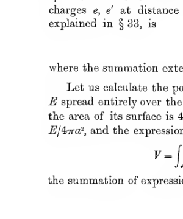
A set of coordinate axes marked \(x\), \(y\), and \(z\) is drawn from a common origin, with a small rectangular parallelepiped suspended in the first octant. The sketch illustrates the infinitesimal volume element used to derive Poisson’s equation from Gauss’s theorem.
50. In free space, where there are no electric charges, the equation assumes the form
and this is known as Laplace’s Equation. We shall denote the operator
by \(\nabla^2\), so that Laplace’s equation may be written in the abbreviated form
Equations (18) and (20) express the same fact as Gauss’ Theorem, but express it in the form of a differential equation. Equation (20) shews that in a region in which no charges exist, the potential satisfies a differential equation which is independent of the charges outside this region by which the potential is produced. It will easily be verified by direct differentiation that the value of \(V\) given in equation (10) is a solution of equation (20).
We can obtain an idea of the physical meaning of this differential equation as follows.
Let us take any point \(O\) and construct a sphere of radius \(r\) about this point. The mean value of \(V\) averaged over the surface of the sphere is
where \(r, \theta, \phi\) are polar coordinates, having \(O\) as origin. If we change the radius of this sphere from \(r\) to \(r + d r\), the rate of change of \(\overline{V}\) is
shewing that \(\overline{V}\) is independent of the radius \(r\) of the sphere. Taking \(r = 0\), the value of \(\overline{V}\) is seen to be equal to the potential at the origin \(O\).
This gives the following interpretation of the differential equation:
V varies from point to point in such a way that the average value of \(V\) taken over any sphere surrounding any point \(O\) is equal to the value of \(V\) at \(O\).
Deductions from Law of Inverse Square#
51. Theorem. The potential cannot have a maximum or a minimum value at any point in space which is not occupied by an electric charge.
For if the potential is to be a maximum at any point \(O\), the potential at every point on a sphere of small radius \(r\) surrounding \(O\) must be less than that at \(O\). Hence the average value of the potential on a small sphere surrounding \(O\) must be less than the value at \(O\), a result in opposition to that of the last section.
A similar proof shews that the value of \(V\) cannot be a minimum.
52. A second proof of this theorem is obtained at once from Laplace’s equation. Regarding \(V\) simply as a function of \(x, y, z\), a necessary condition for \(V\) to have a maximum value at any point is that
shall each be negative at the point in question, a condition which is inconsistent with Laplace’s equation
So also for \(V\) to be a minimum, the three differential coefficients would have to be all positive, and this again would be inconsistent with Laplace’s equation.
53. If \(V\) is a maximum at any point \(O\), which as we have just seen must be occupied by an electric charge, then the value of \(\frac{\partial V}{\partial r}\) must be negative as we cross a sphere of small radius \(r\). Thus
is negative where the integration is taken over a small sphere surrounding \(O\), and by Gauss’ Theorem the value of the surface integral is \(- 4 \pi e\), where \(e\) is the total charge inside the sphere. Thus \(e\) must be positive, and similarly if \(V\) is a minimum, \(e\) must be negative. Thus:
If \(V\) is a maximum at any point, the point must be occupied by a positive charge, and if \(V\) is a minimum at any point, the point must be occupied by a negative charge.
54. We have seen (\(\S 36\)) that in moving along a line of force we are moving, at every point, from higher to lower potential, so that the potential continually decreases as we move along a line of force. Hence a line of force can end only at a point at which the potential is a minimum, and similarly by tracing a line of force backwards, we see that it can begin only at a point of which the potential is a maximum. Combining this result with that of the previous theorem, it follows that:
Lines of force can begin only on positive charges, and can end only on negative charges.
It is of course possible for a line of force to begin on a positive charge, and go to infinity, the potential decreasing all the way, in which case the line of force has, strictly speaking, no end at all. So also, a line of force may come from infinity, and end on a negative charge.
Obviously a line of force cannot begin and end on the same conductor, for if it did so, the potential at its two ends would be the same. Hence there can be no lines of force in the interior of a hollow conductor which contains no charges; consequently there can be no charges on its inner surface.
Tubes of Force#
55. Let us select any small area \(d S\) in the field, and let us draw the lines of force through every point of the boundary of this small area. If \(d S\) is taken sufficiently small, we can suppose the electric intensity to be the same in magnitude and direction at every point of \(d S\), so that the directions of the lines of force at all the points on the boundary will be approximately all parallel. By drawing the lines of force, then, we shall obtain a “tubular” surface-i.e., a surface such that in the neighbourhood of any point the surface may be regarded as cylindrical. The surface obtained in this way is called a “tube of force.” A normal cross-section of a “tube of force” is a section which cuts all the lines of force through its boundary at right angles. It therefore forms part of an equipotential surface.
56. Theorem. If \(\omega_1, \omega_2\) be the areas of two normal cross-sections of the same tube of force, and \(R_1, R_2\) the intensities at these sections, then
Consider the closed surface formed by the two cross-sections of areas \(\omega_1, \omega_2\), and of the part of the tube of force joining them. There is no charge inside this surface, so that by Gauss’ theorem,
If the direction of the lines of force is from \(\omega_1\) to \(\omega_2\), then the outward normal intensity over \(\omega_2\) is \(R_2\), so that the contribution from this area to the surface integral is \(R_2 \omega_2\). So also over \(\omega_1\) the outward normal intensity is \(- R_1\), so that \(\omega_1\) gives a contribution \(- R_1 \omega_1\). Over the rest of the surface, the outward normal is perpendicular to the electric intensity, so that \(N = 0\), and this part of the surface contributes nothing to \(\iint N d S\). The whole value of this integral, then, is
and since this, as we have seen, must vanish, the theorem is proved.
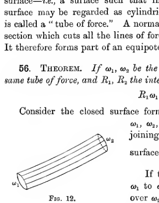
A short cylindrical bundle of field lines is drawn in perspective, with the end cross-sections labeled \(\omega_1\) and \(\omega_2\). Several parallel lines run along the tube, illustrating a tube of force bounded by field lines and cut by two normal cross-sections.
57. Coulomb’s Law. If \(R\) is the outward intensity at a point just outside a conductor, then \(R = 4 \pi \sigma\), where \(\sigma\) is the surface density of electrification on the conductor.
We have already seen that the whole electrification of a conductor must reside on the surface. Therefore we no longer deal with a volume density of electrification \(\rho\), such that the charge in the element of volume \(d x d y d z\) is \(\rho d x d y d z\), but with a surface-density of electrification \(\sigma\) such that the charge on an element \(d S\) of the surface of the conductor is \(\sigma d S\).
The surface of the conductor, as we have seen, is an equipotential, so that by the theorem of p. 29, the intensity is in a direction normal to the surface. Let us draw perpendiculars to the surface at every point on the boundary of a small element of area \(d S\), these perpendiculars each extending a small distance into the conductor in one direction and a small distance away from the conductor in the other. We can close the cylindrical surface so formed, by two small plane areas, each equal and parallel to the original element of area \(d S\). Let us now apply Gauss’ Theorem to this closed surface. The normal intensity is zero over every part of this surface except over the cap of area \(d S\) which is outside the conductor. Over this cap the outward normal intensity is \(R\), so that the value of the surface integral of normal intensity taken over the closed surface, consists of the single term \(R d S\). The total charge inside the surface is \(\sigma d S\), so that by Gauss’ Theorem,
and Coulomb’s Law follows on dividing by \(d S\).
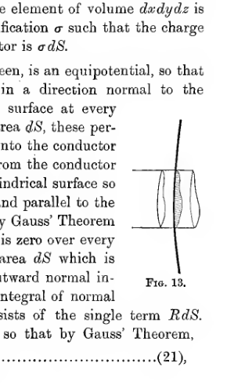
A small pillbox-shaped Gaussian surface straddles the boundary of a conductor. One cap lies just outside the conductor surface, the other just inside, showing the standard construction used to derive the relation between normal intensity and surface charge density.
58. Let us draw the complete tube of force which is formed by the lines of force starting from points on the boundary of the element \(d S\) of the surface of the conductor. Let us suppose that the surface density on this element is positive, so that the area \(d S\) forms the normal cross-section at the positive end, or beginning, of the tube of force. Let us suppose that at the negative end of the tube of force, the normal cross-section is \(d S'\), that the surface density of electrification is \(\sigma'\), \(\sigma'\) being of course negative, and that the intensity in the direction of the lines of force is \(R'\). Then, as in equation (21),
since the outward intensity is now \(- R'\).
Since \(R, R'\) are the intensities at two points in the same tube of force at which the normal cross-sections are \(d S, d S'\), it follows from the theorem of \(\S 56\), that
and hence, on comparing the values just found for \(R d S\) and \(R' d S'\), that
Since \(\sigma d S\) and \(\sigma' d S'\) are respectively the charges of electricity from which the tube begins and on which it terminates, we see that:
The negative charge of electricity on which a tube of force terminates is numerically equal to the positive charge from which it starts.
If we close the ends of the tube of force by two small caps inside the conductors, as in fig. 14, we have a closed surface such that the normal intensity vanishes at every point. Thus, by Gauss’ Theorem, the total charge inside must vanish, giving the result at once.
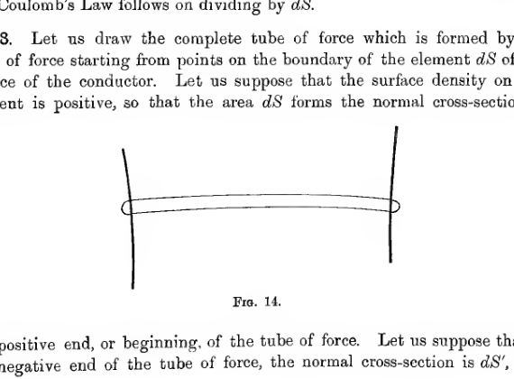
A complete tube of force is shown stretching between two conductor surfaces. The tube narrows to a small circular cross-section at one end and terminates on a matching cross-section at the other, illustrating a bounded tube whose end caps lie just inside the conductors.
59. The numerical value of either of the charges at the ends of a tube of force may conveniently be spoken of as the strength of the tube. A tube of unit strength is spoken of by many writers as a unit tube of force.
The strength of a tube of force is \(\sigma d S\) in the notation already used, and this, by Coulomb’s Law, is equal to \(\frac{1}{4 \pi} R d S\) where \(R\) is the intensity at the end \(d S\) of the tube. By the theorem of \(\S 56\), \(R d S\) is equal to \(R_1 \omega_1\) where \(R_1, \omega_1\) are the intensity and cross-section at any point of the tube. Hence \(R_1 \omega_1 = 4 \pi\) times the strength of the tube. It follows that:
The intensity at any point is equal to \(4 \pi\) times the aggregate strength per unit area of the tubes which cross a plane drawn at right angles to the direction of the intensity.
In terms of unit tubes of force, we may say that the intensity is \(4 \pi\) times the number of unit tubes per unit area which cross a plane drawn at right angles to the intensity.
The conception of tubes of force is due to Faraday: indeed it formed almost his only instrument for picturing to himself the phenomena of the Electric Field. It will be found that a number of theorems connected with the electric field become almost obvious when interpreted with the help of the conception of tubes of force. For instance we proved on p. 37 that when a number of charged bodies are placed inside a hollow conductor, they induce on its inner surface a charge equal and opposite to the sum of all their charges. This may now be regarded as a special case of the obvious theorem that the total charge associated with the beginnings and terminations of any number of tubes of force, none of which pass to infinity, must be nil.
Examples of Fields of Force#
60. It will be of advantage to study a few particular fields of electric force by means of drawing their lines of force and equipotential surfaces.
I. Two Equal Point Charges.#
61. Let \(A, B\) be two equal point charges, say at the points \(x = - a, + a\). The equations of the lines of force which are in the plane of \(x, y\) are easily found to be
where \(P\) is the point \(x, y\).
This equation admits of integration in the form
From this equation the lines of force can be drawn, and will be found to lie as in fig. 15.
62. There are, however, only a few cases in which the differential equations of the lines of force can be integrated, and it is frequently simplest to obtain the properties of the lines of force directly from the differential equation. The following treatment illustrates the method of treating lines of force without integrating the differential equation.
From equation (22) we see that obvious lines of force are
\(y = 0\), \(\frac{\partial y}{\partial x} = 0\), giving the axis \(A B\);
\(x = 0\), \(P A = P B\), \(\frac{\partial y}{\partial x} = \infty\), giving the line which bisects \(A B\) at right angles.
These lines intersect at \(C\), the middle point of \(A B\). At this point, then, \(\frac{\partial y}{\partial x}\) has two values, and since \(\frac{\partial y}{\partial x} = \frac{Y}{X}\), it follows that we must have \(X = 0\), \(Y = 0\). In other words, the point \(C\) is a point of equilibrium, as is otherwise obvious.
The same result can be seen in another way. If we start from \(A\) and draw a small tube surrounding the line \(A B\), it is clear that the cross-section of the tube, no matter how small it was initially, will have become infinite by the time it reaches the plane which bisects \(A B\) at right angles-in fact the cross-section is identical with the infinite plane. Since the product of the cross-section and the normal intensity is constant throughout a tube, it follows that at the point \(C\), the intensity must vanish.
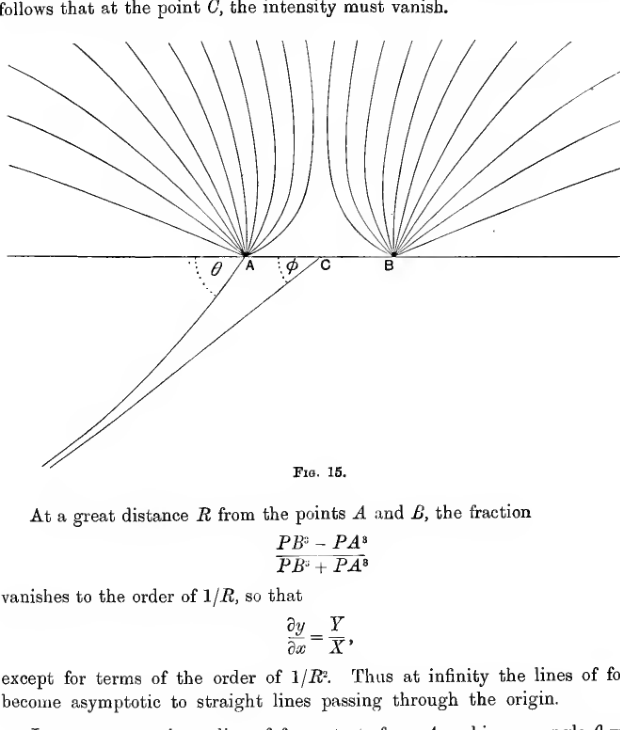
Two equal positive charges labeled \(A\) and \(B\) lie on a common horizontal axis with midpoint \(C\). Symmetric lines of force spread outward from both charges, bowing away from the perpendicular bisector, while one sample line leaves \(A\) at an angle \(\theta\) and becomes asymptotic at infinity at angle \(\phi\).
At a great distance \(R\) from the points \(A\) and \(B\), the fraction
vanishes to the order of \(1/R\), so that
except for terms of the order of \(1/R^2\). Thus at infinity the lines of force become asymptotic to straight lines passing through the origin.
Let us suppose that a line of force starts from \(A\) making an angle \(\theta\) with \(B A\) produced, and is asymptotic at infinity to a line through \(C\) which makes an angle \(\phi\) with \(B A\) produced. By rotating this line of force about the axis \(A B\) we obtain a surface which may be regarded as the boundary of a bundle of tubes of force. This surface cuts off an area
from a small sphere of radius \(r\) drawn about \(A\), and at every point of this sphere the intensity is \(e/r^2\) normal to the sphere. The surface again cuts off an area
from a sphere of very great radius \(R\) drawn about \(C\), and at every point of this sphere the intensity is \(2 e/R^2\). Hence, applying Gauss’ Theorem to the part of the field enclosed by the two spheres of radii \(r\) and \(R\), and the surface formed by the revolution of the line of force about \(A B\), we obtain
from which follows the relation
In particular, the line of force which leaves \(A\) in a direction perpendicular to \(A B\) is bent through an angle of \(30^\circ\) before it reaches its asymptote at infinity.
The sections of the equipotentials made by the plane of \(x y\) for this case are shewn in fig. 16 which is drawn on the same scale as fig. 15. The equations of these curves are of course
curves of the sixth degree. The equipotential which passes through \(C\) is of interest, as it intersects itself at the point \(C\). This is a necessary consequence of the fact that \(C\) is a point of equilibrium. Indeed the conditions for a point of equilibrium, namely
may be interpreted as the condition that the equipotential (\(V = \text{constant}\)) through the point should have a double tangent plane or a tangent cone at the point.
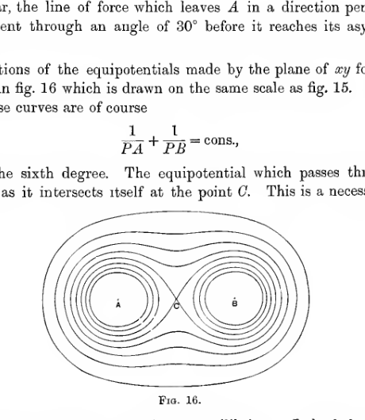
Equipotential curves around two equal positive charges form nested closed ovals around each charge and a larger surrounding oval around both. The equipotential through the midpoint \(C\) crosses itself there, producing a pinched figure-eight-like waist between the two charge centers.
II. Point charges \(+ e, - e\).#
63. Let charges \(\pm e\) be at the points \(x = \pm a\) (\(A, B\)) respectively. The differential equations of the lines of force are found to be
and the integral of this is
The lines of force are shewn in fig. 17.
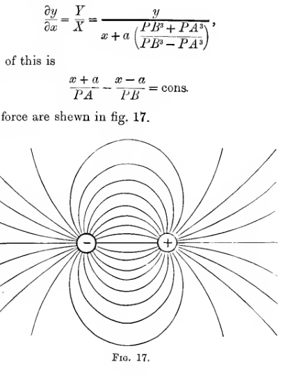
A negative charge at left and a positive charge at right are joined by a symmetric family of dipole field lines. Some lines run directly from the positive to the negative charge, while outer lines sweep broadly around both charges in the classic two-charge pattern.
III. Electric Doublet.#
64. An important case occurs when we have two large charges \(+ e, - e\), equal and opposite in sign, at a small distance apart. Taking Cartesian coordinates, let us suppose we have the charge \(+ e\) at \(a, 0, 0\) and the charge \(- e\) at \(- a, 0, 0\), so that the distance of the charges is \(2 a\).
The potential is
and when \(a\) is very small, so that squares and higher powers of \(a\) may be neglected, this becomes
If \(a\) is made to vanish, while \(e\) becomes infinite, in such a way that \(2 e a\) retains the finite value \(\mu\), the system is described as an electric doublet of strength \(\mu\) having for its direction the positive axis of \(x\). Its potential is
or, if we turn to polar coordinates and write \(x = r \cos \theta\), is
The lines of force are shewn in fig. 18. Obviously the lines at the centre of this figure become identical with those shewn in fig. 17, if the latter are shrunk indefinitely in size.
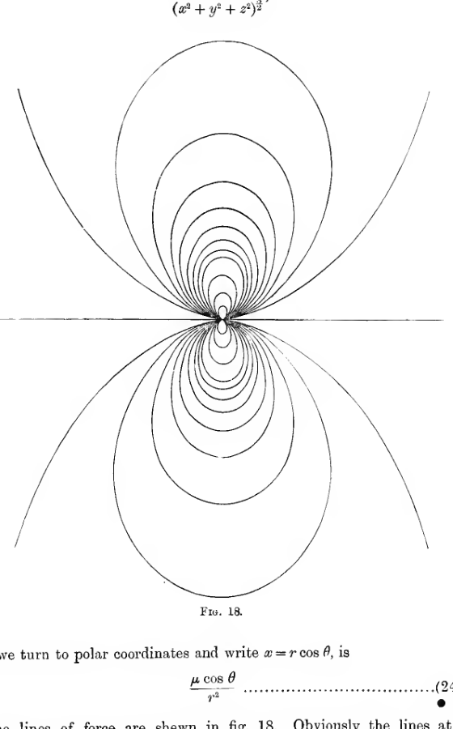
A dense dipole pattern is centered at the origin, with tightly packed lines near the doublet and larger loops spreading above and below a horizontal axis. The figure shows the limiting field-line pattern of an electric doublet, symmetric with respect to both the horizontal axis and vertical reflection.
IV. Point charges \(+ 4 e, - e\).#
65. Fig. 19 represents the distribution of the lines of force when the electric field is produced by two point charges, \(+ 4 e\) at \(A\) and \(- e\) at \(B\).
At infinity the resultant force will be \(3 e/r^2\), where \(r\) is the distance from a point near to \(A\) and \(B\). The direction of this force is outwards. Thus no lines of force can arrive at \(B\) from infinity, so that all the lines of force which enter \(B\) must come from \(A\). The remaining lines of force from \(A\) go to infinity. The tubes of force from \(A\) to \(B\) form a bundle of aggregate strength \(e\), while those from \(A\) to infinity have aggregate strength \(3 e\). The two bundles of tubes of force are separated by the lines of force through \(C\). At \(C\) the direction of the resultant force is clearly indeterminate, so that \(C\) is a point of equilibrium. As the condition that \(C\) is a point of equilibrium we have
So that \(A B = B C\). At \(C\) the two lines of force from \(A\) coalesce and then separate out into two distinct lines of force, one from \(C\) to \(B\), and the other from \(C\) to infinity in the direction opposite to \(C B\).
The equipotentials in this field, the system of curves
are represented in fig. 20, which is drawn on the same scale as fig. 19.
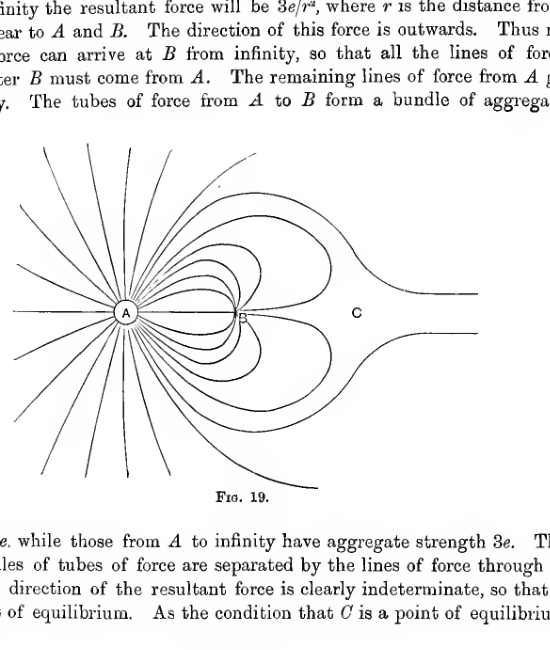
A stronger positive charge at \(A\) emits many outward field lines, while a weaker negative charge at \(B\) captures only part of them. Several lines from \(A\) bend into \(B\), and others pass outward to infinity, separated by a pair of critical lines meeting at the equilibrium point \(C\).
Since \(C\) is a point of equilibrium the equipotential through the point \(C\) must of course cut itself at \(C\). At \(C\) the potential
since \(C A = 2 C B\). From the loop of this equipotential which surrounds \(B\), the potential must fall continuously to \(-\infty\) as we approach \(B\), since, by the theorem of \(\S 51\), there can be no maxima or minima of potential between this loop and the point \(B\). Also no equipotential can intersect itself since there are obviously no points of equilibrium except \(C\). One of the intermediate equipotentials is of special interest, namely that over which the potential is zero. This is the locus of the point \(P\) given by
and is therefore a sphere. This is represented by the outer of the two closed curves which surround \(B\) in the figure.
In the same way we see that the other loop of the equipotential through \(C\) must be occupied by equipotentials for which the potential rises steadily to the value \(+\infty\) at \(A\). So also outside the equipotential through \(C\), the potential falls steadily to the value zero at infinity. Thus the zero equipotential consists of two spheres-the sphere at infinity and the sphere surrounding \(B\) which has already been mentioned.
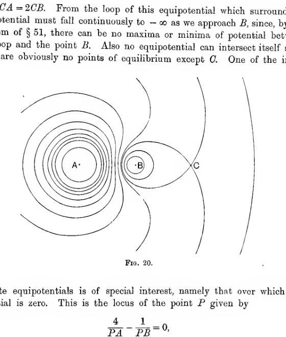
Equipotential curves around a strong positive charge at \(A\) and a weaker negative charge at \(B\) crowd tightly near each charge and pinch through the equilibrium point \(C\). One loop encloses \(B\), another surrounds \(A\), and larger open curves extend outward, including the zero-potential locus.
V. Three equal charges at the corners of an equilateral triangle.#
66. As a further example we may examine the disposition of equipotentials when the field is produced by three point charges at the corners of an equilateral triangle. The intersection of these by the plane in which the charges lie is represented in fig. 21, in which \(A, B, C\) are the points at which the charges are placed, and \(D\) is the centre of the triangle \(A B C\).
It will be found that there are three points of equilibrium, one on each of the lines \(A D, B D, C D\). Taking \(A D = a\), the distance of each point of equilibrium from \(D\) is just less than \(\frac{1}{4} a\). The same equipotential passes through all three points of equilibrium. If the charge at each of the points \(A, B, C\) is taken to be unity, this equipotential has a potential \(\frac{3.04}{a}\). The equipotential has three loops surrounding the points \(A, B, C\). In each of these loops the equipotentials are closed curves, which finally reduce to small circles surrounding the points \(A, B, C\). Those drawn correspond to the potentials \(\frac{3.25}{a}\), \(\frac{3.5}{a}\), \(\frac{3.75}{a}\), and \(\frac{4}{a}\).
Outside the equipotential \(\frac{3.04}{a}\), the equipotentials are closed curves surrounding the former equipotential, and finally reducing to circles at infinity. The curves drawn correspond to potentials \(\frac{2}{a}\), \(\frac{2.25}{a}\), \(\frac{2.5}{a}\), and \(\frac{2.75}{a}\).
There remains the region between the point \(D\) and the equipotential \(\frac{3.04}{a}\). At \(D\) the potential is \(\frac{3.00}{a}\), so that the potential falls as we recede from the equipotential \(\frac{3.04}{a}\) and reaches its minimum value at \(D\). The potential at \(D\) is of course not a minimum for all directions in space: for the potential increases as we move away from \(D\) in directions which are in the plane \(A B C\), but obviously decreases as we move away from \(D\) in a direction perpendicular to this plane. Taking \(D\) as origin, and the plane \(A B C\) as plane of \(x y\), it will be found that near \(D\) the potential is
Thus the equipotential through \(D\) is shaped like a right circular cone in the immediate neighbourhood of the point \(D\). From the equation just found, it is obvious that near \(D\) the sections of the equipotentials by the plane \(A B C\) will be circles surrounding \(D\).
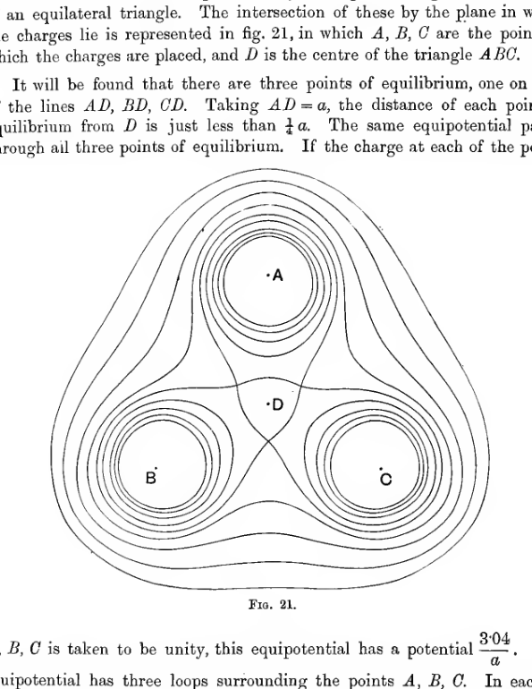
Three equal charge centers \(A\), \(B\), and \(C\) sit at the vertices of an equilateral triangle, with the central point \(D\) between them. Nested equipotentials surround each charge separately, while a larger three-lobed equipotential envelope pinches through the region around the three equilibrium points.
From a study of the section of the equipotentials as shewn in fig. 21, it is easy to construct the complete surfaces. We see that each equipotential for which \(V\) has a very high value consists of three small spheres surrounding the points \(A, B, C\). For smaller values of \(V\), which must, however, be greater than \(\frac{3.04}{a}\), each equipotential still consists of three closed surfaces surrounding \(A, B, C\), but these surfaces are no longer spherical, each one bulging out towards the point \(D\). As \(V\) decreases, the surfaces continue to swell out, until, when \(V = \frac{3.04}{a}\), the surfaces touch one another simultaneously, in a way which will readily be understood on examining the section of this equipotential as shewn in fig. 21. It will be seen that this equipotential is shaped like a flower of three petals from which the centre has been cut away. As \(V\) decreases further the surfaces continue to swell, and when \(V = \frac{3}{a}\), the space at the centre becomes filled up. For still smaller values of \(V\) the equipotentials are closed singly-connected surfaces, which finally become spheres at infinity corresponding to the potential \(V = 0\).
The sections of the equipotentials by a plane through \(D A\) perpendicular to the plane \(A B C\) are shewn in fig. 22.
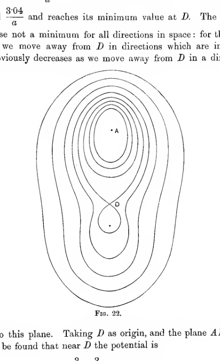
In a vertical section through one vertex and the centre, nested elongated equipotentials surround the top charge \(A\) and bulge downward toward the central point \(D\). Near \(D\) the equipotential through the equilibrium point narrows into a cone-like pinch, showing the saddle character of the potential there.
Special Properties of Equipotentials and Lines of Force#
The Equipotentials and Lines of Force at infinity.#
67. In \(\S 40\), we obtained the general equation
If \(r\) denotes the distance of \(x, y, z\) from the origin, and \(r_1\) the distance of \(x_1, y_1, z_1\), from the origin, we may write this in the form
At a great distance from the origin this may be expanded in descending powers of the distance, in the form
The term of order \(\frac{1}{r}\) is
The term of order \(\frac{1}{r^2}\) is
If the origin is taken at the centroid of \(e_1\) at \(x_1, y_1, z_1\), \(e_2\) at \(x_2, y_2, z_2\), etc., we have
Thus by taking the origin at this centroid, the term of order \(\frac{1}{r^2}\) will disappear.
The term of order \(\frac{1}{r^3}\) is
Let \(A, B, C\) be the moments of inertia about the axes, of \(e_1\) at \(x_1, y_1, z_1\), etc., and let \(I\) be the moment of inertia about the line joining the origin to \(x, y, z\); then
and the terms of order \(\frac{1}{r^3}\) become
Thus taking the centroid of the charges as origin, the potential at a great distance from the origin can be expanded in the form
Thus except when the total charge \(\Sigma e\) vanishes, the field at infinity is the same as if the total charge \(\Sigma e\) were collected at the centroid of the charges. Thus the equipotentials approximate to spheres having this point as centre, and the asymptotes to the lines of force are radii drawn through the centroid. These results are illustrated in the special fields of force considered in \(\S\S 61\)-\(66\).
The Lines of Force from collinear charges.#
68. When the field is produced solely by charges all in the same straight line, the equipotentials are obviously surfaces of revolution about this line, while the lines of force lie entirely in planes through this line. In this important case, the equation of the lines of force admits of direct integration.
Let \(P_1, P_2, P_3, \ldots\) be the positions of the charges \(e_1, e_2, e_3, \ldots\). Let \(Q, Q'\) be any two adjacent points on a line of force. Let \(N\) be the foot of the perpendicular from \(Q\) to the axis \(P_1 P_2, \ldots\), and let a circle be drawn perpendicular to this axis with centre \(N\) and radius \(Q N\). This circle subtends at \(P_1\) a solid angle
where \(\theta_1\) is the angle \(Q P_1 N\). Thus the surface integral of normal force arising from \(e_1\), taken over the circle \(Q N\), is
and the total surface integral of normal force taken over this surface is
If we draw the similar circle through \(Q'\), we obtain a closed surface bounded by these two circles and by the surface formed by the revolution of \(Q Q'\). This contains no electric charge, so that the surface integral of normal force taken over it must be nil. Hence the integral of force over the circle \(Q N\) must be the same as that over the similar circle drawn through \(Q'\). This gives the equations of the lines of force in the form
which as we have seen, becomes
Analytically, let the point \(P_1\) have coordinates \(a_1, 0, 0\), let \(P_2\) have coordinates \(a_2, 0, 0\), etc. and let \(Q\) be the point \(x, y, z\). Then
and the equation of the surfaces formed by the revolution of the lines of force is
It will easily be verified by differentiation that this is an integral of the differential equation
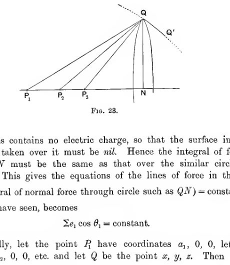
Several point charges \(P_1, P_2, P_3\) lie along a common axis. A point \(Q\) above the axis, its neighbouring point \(Q'\), and the perpendicular foot \(N\) define the circular surface used to derive the first integral for field lines produced by collinear charges.
Equipotentials which intersect themselves.#
69. We have seen that, in general, the equipotential through any point of equilibrium must intersect itself at the point of equilibrium.
Let \(x, y, z\) be a point of equilibrium, and let the potential at this point be denoted by \(V_0\). Let the potential at an adjacent point \(x + \xi, y + \eta, z + \zeta\), be denoted by \(V_{\xi, \eta, \zeta}\). By Taylor’s Theorem, if \(f(x, y, z)\) is any function of \(x, y, z\), we have
where the differential coefficients of \(f\) are evaluated at \(x, y, z\). Taking \(f(x, y, z)\) to be the potential at \(x, y, z\), this of course being a function of the variables \(x, y, z\), the foregoing equation becomes
If \(x, y, z\) is a point of equilibrium,
so that
Referred to \(x, y, z\) as origin, the coordinates of the point \(x + \xi, y + \eta, z + \zeta\) become \(\xi, \eta, \zeta\), and the equation of the equipotential \(V = C\) becomes
In the neighbourhood of the point of equilibrium, the values of \(\xi, \eta, \zeta\) are small, so that in general the terms containing powers of \(\xi, \eta, \zeta\) higher than squares may be neglected, and the equation of the equipotential \(V = C\) becomes
In particular the equipotential \(V = V_0\) becomes identical, in the neighbourhood of the point of equilibrium, with the cone
Let this cone, referred to its principal axes, become
then, since the sum of the coefficients of the squares of the variables is an invariant,
Now \(a + b + c = 0\) is the condition that the cone shall have three perpendicular generators. Hence we see that at the point at which an equipotential cuts itself, we can always find three perpendicular tangents to the equipotential. Moreover we can find these perpendicular tangents in an infinite number of ways.
In the particular case in which the cone is one of revolution (e.g., if the whole field is symmetrical about an axis, as in figures 16 and 20), the equation of the cone must become
where the axis of \(\zeta'\) is the axis of symmetry. The section of the equipotential made by any plane through the axis, say that of \(\xi' \zeta'\), must now become
in the neighbourhood of the point of equilibrium, and this shews that the tangents to the equipotentials each make a constant angle \(\tan^{-1} \sqrt{2}\) \((= 54^\circ 44')\) with the axis of symmetry.
In the more general cases in which there is not symmetry about an axis, the two branches of the surface will in general intersect in a line, and the cone reduces to two planes, the equation being
where the axis of \(\zeta'\) is the line of intersection. We now have \(a + b = 0\), so that the tangent planes to the equipotential intersect at right angles.
An analogous theorem can be proved when \(n\) sheets of an equipotential intersect at a point. The theorem states that the \(n\) sheets make equal angles \(\pi/n\) with one another. (Rankin’s Theorem, see Maxwell’s Electricity and Magnetism, \(\S 115\), or Thomson and Tait’s Natural Philosophy, \(\S 780\).)
70. A conductor is always an equipotential, and can be constructed so as to cut itself at any angle we please. It will be seen that the foregoing theorems can fail either through the \(a, b\) and \(c\) of equation (24) all vanishing, or through their all becoming infinite. In the former case the potential near a point at which the conductor cuts itself, is of the form (cf. equation (25)),
so that the components of intensity are of the forms
The intensity near the point of equilibrium is therefore a small quantity of the second order, and since by Coulomb’s Law \(R = 4 \pi \sigma\), it follows that the surface density is zero along the line of intersection, and is proportional to the square of the distance from the line of intersection at adjacent points.
If, however, \(a, b\) and \(c\) are all infinite, we have the electric intensity also infinite, and therefore the surface density is infinite along the line of intersection.
71. It is clear that the surface density will vanish when the conducting surface cuts itself in such a way that the angle less than two right angles is external to the conductor; and that the surface density will become infinite when the angle greater than two right angles is external to the conductor. This becomes obvious on examining the arrangement of the lines of force in the neighbourhood of the angle.
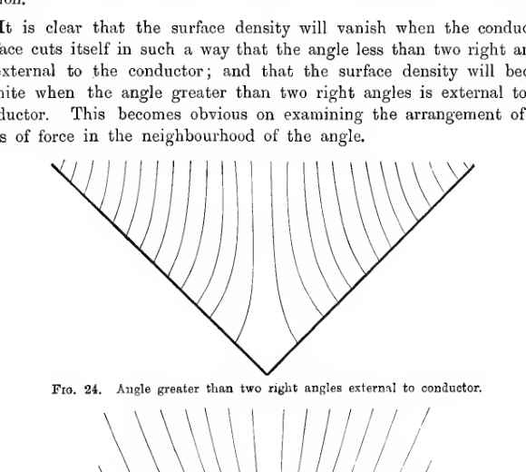
Field lines crowd into the interior of a re-entrant corner where the exterior angle is greater than two right angles. The lines bunch toward the vertex, showing the intensification of field and surface density at such an outwardly concave conducting angle.
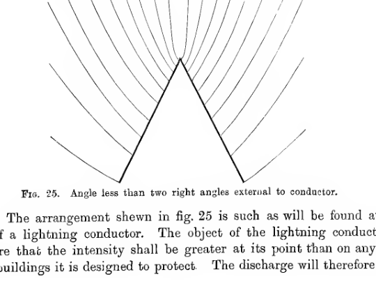
Field lines spread more sparsely near a sharp outward point where the exterior angle is less than two right angles. The pattern shows how the field is intensified at the projecting conductor tip, the geometry associated with a lightning conductor.
The arrangement shewn in fig. 25 is such as will be found at the point of a lightning conductor. The object of the lightning conductor is to ensure that the intensity shall be greater at its point than on any part of the buildings it is designed to protect. The discharge will therefore take place from the point of the lightning conductor sooner than from any part of the building, and by putting the conductor in good electrical communication with the earth, it is possible to ensure that no harm shall be done to the main buildings by the electrical discharge.
72. An application of the same principle will explain the danger to a human being or animal of standing in the open air in the presence of a thunder cloud, or of standing under an isolated tree. The upward point, whether the head of man or animal, or the summit of the tree, tends to collect the lines of force which pass from the cloud to the ground, so that a discharge of electricity will take place from the head or tree rather than from the ground.
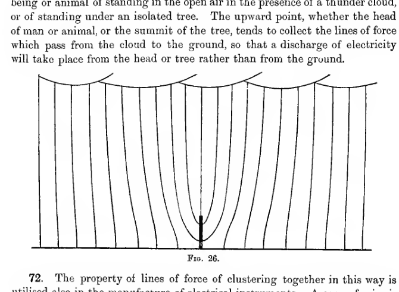
Nearly vertical field lines descend from a charged cloud layer above and bend inward toward a pointed object rising from the ground. The concentration of lines at the tip shows why discharge is more likely there than over the surrounding flat ground.
The property of lines of force of clustering together in this way is utilised also in the manufacture of electrical instruments. A cage of wire is placed round the instrument and almost all the lines of force from any charges which there may be outside the instrument will cluster together on the convex surfaces of the wire. Very few lines of force escape through this cage, so that the instrument inside the cage is hardly affected at all by any electric phenomena which may take place outside it. Fig. 27 shews the way in which lines of force are absorbed by a wire grating. It is drawn to represent the lines of force of a uniform field meeting a plane grating placed at right angles to the field of force.
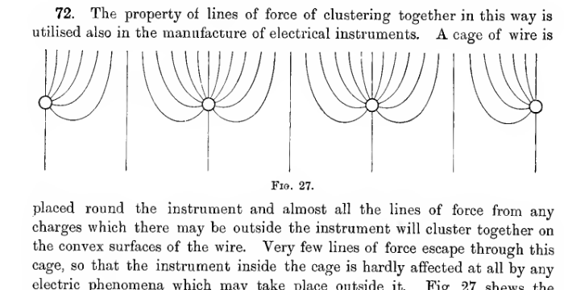
Repeated vertical field lines approach a horizontal wire grating and curve into the individual wires, with only small remnants passing beyond. The sketch illustrates electrostatic screening by a conducting grid that captures most of the field lines on its convex surfaces.
References#
On the general theory of Electrostatic Forces and Potential:
Maxwell. Electricity and Magnetism. Oxford (Clarendon Press). Chap. VI.
Thomson and Tait. Natural Philosophy. Cambridge (Univ. Press). Chap. VI.
On Cavendish’s experiment on the Law of Force:
Cavendish. Electrical Researches. Experimental determination of the Law of Electric Force (\(\S\S 217\)-\(235\)), and Note 19.
On Examples of Fields of Force:
Maxwell. Electricity and Magnetism, Chaps. VI, VII.
Examples#
Two particles each of mass \(m\) and charged with \(e\) units of electricity of the same sign are suspended by strings each of length \(a\) from the same point; prove that the inclination \(\theta\) of each string to the vertical is given by the equation
Charges \(+ 4 e, - e\) are placed at the points \(A, B\), and \(C\) is the point of equilibrium. Prove that the line of force which passes through \(C\) meets \(A B\) at an angle of \(60^\circ\) at \(A\) and at right angles at \(C\).
Find the angle at \(A\) (question 2) between \(A B\) and the line of force which leaves \(B\) at right angles to \(A B\).
Two positive charges \(e_1\) and \(e_2\) are placed at the points \(A\) and \(B\) respectively. Shew that the tangent at infinity to the line of force which starts from \(e_1\) making an angle \(a\) with \(B A\) produced, makes an angle
with \(B A\), and passes through the point \(C\) in \(A B\) such that
Point charges \(+ e, - e\) are placed at the points \(A, B\). The line of force which leaves \(A\) making an angle \(a\) with \(A B\) meets the plane which bisects \(A B\) at right angles, in \(P\). Shew that
If any closed surface be drawn not enclosing a charged body or any part of one, shew that at every point of a certain closed line on the surface it intersects the equipotential surface through the point at right angles.
The potential is given at four points near each other and not all in one plane. Obtain an approximate construction for the direction of the field in their neighbourhood.
The potentials at the four corners of a small tetrahedron \(A, B, C, D\) are \(V_1, V_2, V_3, V_4\) respectively. \(G\) is the centre of gravity of masses \(M_1\) at \(A\), \(M_2\) at \(B\), \(M_3\) at \(C\), \(M_4\) at \(D\). Shew that the potential at \(G\) is
Charges \(3 e, - e, - e\) are placed at \(A, B, C\) respectively, where \(B\) is the middle point of \(A C\). Draw a rough diagram of the lines of force; shew that a line of force which starts from \(A\) making an angle with \(A B\) \(> \cos^{-1} (- \frac{1}{3})\) will not reach \(B\) or \(C\), and shew that the asymptote of the line of force for which \(a = \cos^{-1} (- \frac{2}{3})\) is at right angles to \(A C\).
If there are three electrified points \(A, B, C\) in a straight line, such that \(A C = f\), \(B C = \frac{a^2}{f}\), and the charges are \(e, - \frac{e \omega}{f}\) and \(V a\) respectively, shew that there is always a spherical equipotential surface, and discuss the position of the points of equilibrium on the line \(A B O\) when
and when
\(A\) and \(C\) are spherical conductors with charges \(e + e'\) and \(- e\) respectively. Shew that there is either a point or a line of equilibrium, depending on the relative size and positions of the spheres, and on \(e/e'\). Draw a diagram for each case giving the lines of force and the sections of the equipotentials by a plane through the centres.
An electrified body is placed in the vicinity of a conductor in the form of a surface of anticlastic curvature. Shew that at that point of any line of force passing from the body to the conductor, at which the force is a minimum, the principal curvatures of the equipotential surface are equal and opposite.
Shew that it is not possible for every family of non-intersecting surfaces in free space to be a family of equipotentials, and that the condition that the family of surfaces
shall be capable of being equipotentials is that
shall be a function of \(\lambda\) only.
In the last question, if the condition is satisfied find the potential.
Shew that the confocal ellipsoids
can form a system of equipotentials, and express the potential as a function of \(\lambda\).
If two charged concentric shells be connected by a wire, the inner one is wholly discharged. If the law of force were
prove that there would be a charge \(B\) on the inner shell such that if \(A\) were the charge on the outer shell, and \(f, g\) the sum and difference of the radii,
approximately.
Three infinite parallel wires cut a plane perpendicular to them in the angular points \(A, B, C\) of an equilateral triangle, and have charges \(e, e, - e'\) per unit length respectively. Prove that the extreme lines of force which pass from \(A\) to \(C\) make at starting angles
with \(A C\), provided that \(e' > 2 e\).
A negative point charge \(- e_2\) lies between two positive point charges \(e_1\) and \(e_3\) on the line joining them and at distances \(\alpha, \beta\) from them respectively. Shew that, if the magnitudes of the charges are given by
and if \(1 < \lambda^2 < \frac{(\alpha + \beta)^2}{(\alpha - \beta)^2}\), there is a circle at every point of which the force vanishes. Determine the general form of the equipotential surface on which this circle lies.
Charges of electricity \(e_1, - e_2, e_3\), (\(e_3 > e_1\)) are placed in a straight line, the negative charge being midway between the other two. Shew that, if \(4 e_2\) lie between \((e_3 - e_1^3)^{1/3}\) and \((e_3^{1/3} + e_1^{1/3})^3\), the number of unit tubes of force that pass from \(e_1\) to \(e_3\) is